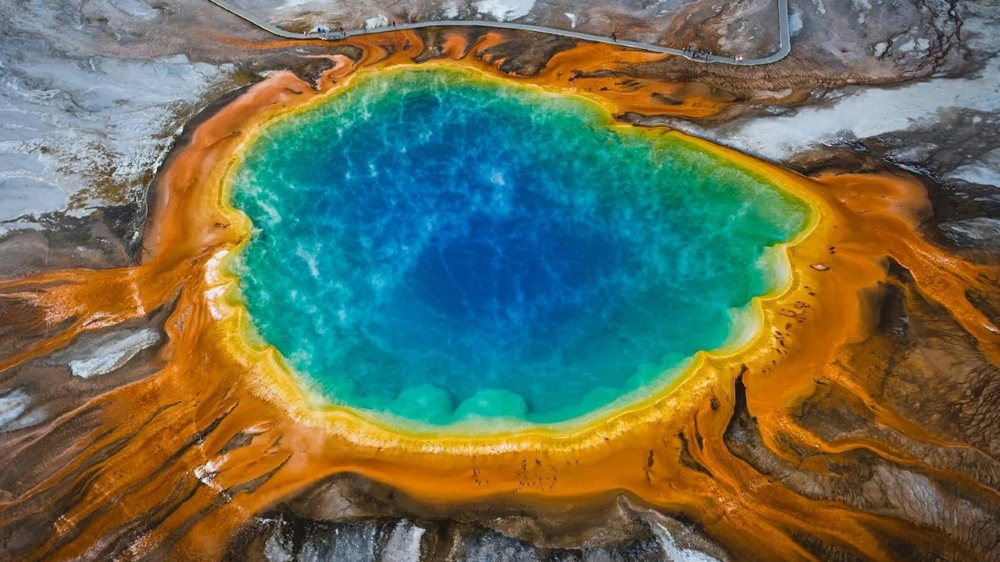
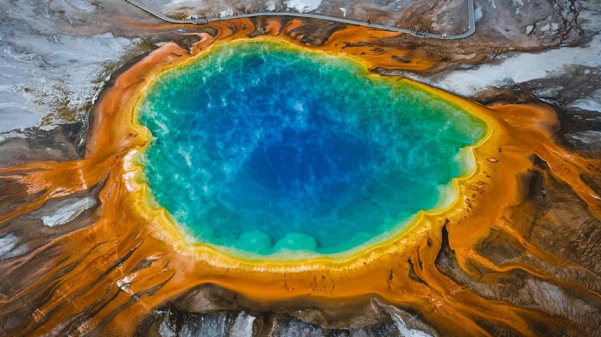
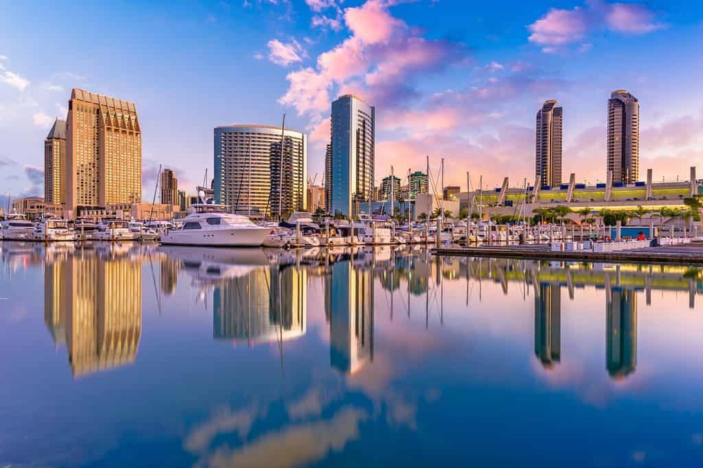
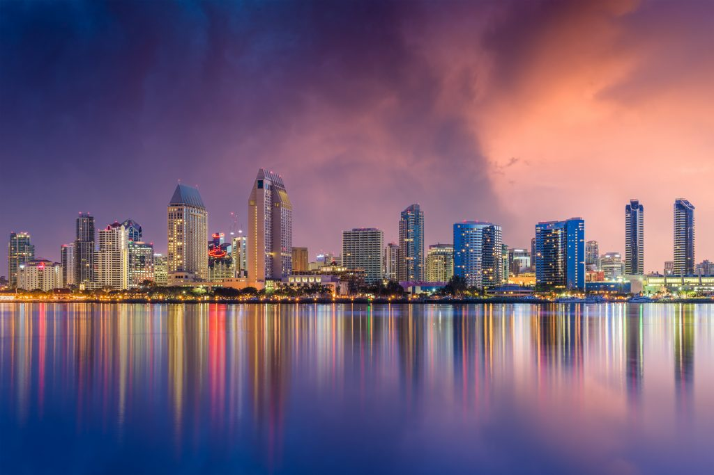
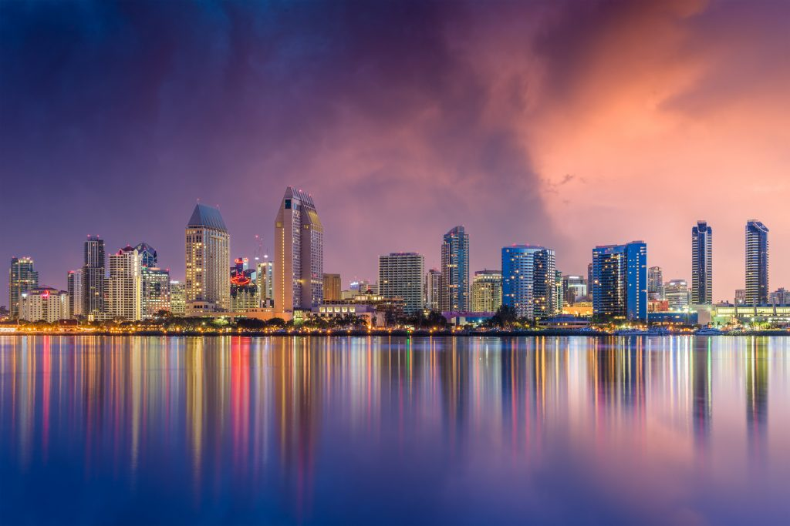
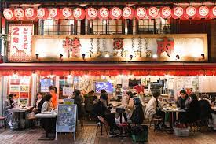
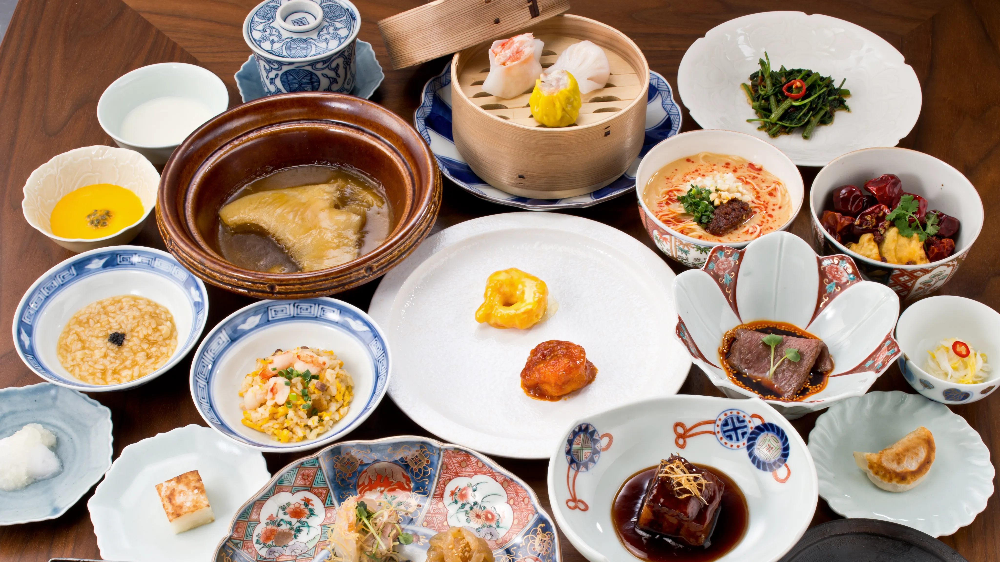
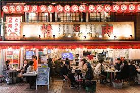
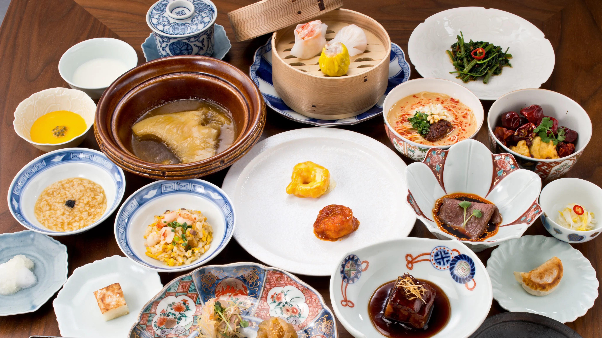

Travel
Yellowstone

Yellowstone was designated as a national park in 1812 and covers 2.2 million acres. It boasts a diverse array of wildlife and outdoor activites.
Yellowstone is home to Old Faithful Geyser. It also contains the tallest active geyser in the world - Steamboat Geyser. There are many wonderful sites to see at this park!
Photo Gallery

 


Places to visit
- Old Faithful Geyser
- Mammoth Hot Springs
- Tower Fall
San Diego, California
San Diego is a city in California. It is bordered by the Pacific Ocean. Over 1.3 million residents live in San Diego. The city has a mild year-round Mediterranean climate with temperatures typically ranging from 60 to 75 degrees F.
There are many things to do in San Diego. You can visit the beach, eat at one of the city's delicious restaurants, or visit the aquarium! With a temperate climate and exciting activities, you are sure to have a great time when you visit.
Photo Gallery

 

Places to visit
- Balboa Park
- San Diego Zoo
- USS Midway Museum
Tokyo, Japan

The following descriptions were created using generative AI.
Tokyo, the bustling capital of Japan, stands as a vibrant metropolis where tradition seamlessly intertwines with modernity. Nestled on the eastern coast of Honshu Island, Tokyo is a captivating blend of futuristic skyscrapers, historic temples, and lush green spaces. The city's iconic skyline is dominated by architectural marvels like the Tokyo Skytree and the Tokyo Tower, offering panoramic views of the sprawling urban landscape. Amidst the neon-lit streets of districts like Shibuya and Shinjuku, visitors can explore a myriad of entertainment options, from cutting-edge technology stores to eclectic fashion boutiques. Tokyo is a global trendsetter, influencing art, fashion, and technology on an international scale.
Beyond its urban façade, Tokyo preserves its rich cultural heritage in serene pockets like Asakusa, where the historic Senso-ji Temple and Nakamise Shopping Street provide a glimpse into the city's past. Cherry blossoms in spring and the mesmerizing autumn foliage in parks like Ueno and Chidorigafuchi add a touch of seasonal beauty to the cityscape. Tokyo's efficient public transportation system, including the iconic Shibuya Crossing, reflects the city's harmonious blend of tradition and progress. Whether indulging in world-class cuisine, exploring historic landmarks, or embracing the cutting-edge innovations, Tokyo offers an immersive experience that captivates the senses and leaves a lasting impression on every visitor.
Photo Gallery
 



Places to visit
- Tokyo Skytree
- Shinjuki Gyoen National Garden
- Shibuya Scramble Crossing